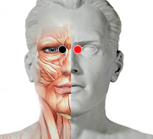

Antrax, bacilo
Par
craneal - craneal

Generalidades:
Problemas nasofaríngeos, pólipos nasales, dolor, visión mala, fotofobia, moco, quistes, Tumor hipofisiario. Otitis, laringitis, conjuntivitis. Asociado con virus da pólipos nasales, con bacterias provoca abseso en nariz y con ambos (virus y bacterias) Adenoma hipofisiario (Síndrome de Cushing )
También se manifiesta como carbunco cutáneo que es una mancha oscura en la piel, pulmón o aparato digestivo. Actualmente se han identificado 89 cepas de este patógeno; produce endoesporas que pueden durar por años en el medio ambiente hasta ser ingeridas por algún animal o humano y comienza su ciclo de vida.
Transmisión
Por comer alimentos contaminados, beber agua contaminada y inhalar las esporas que pudieran encontrarse en el aire.